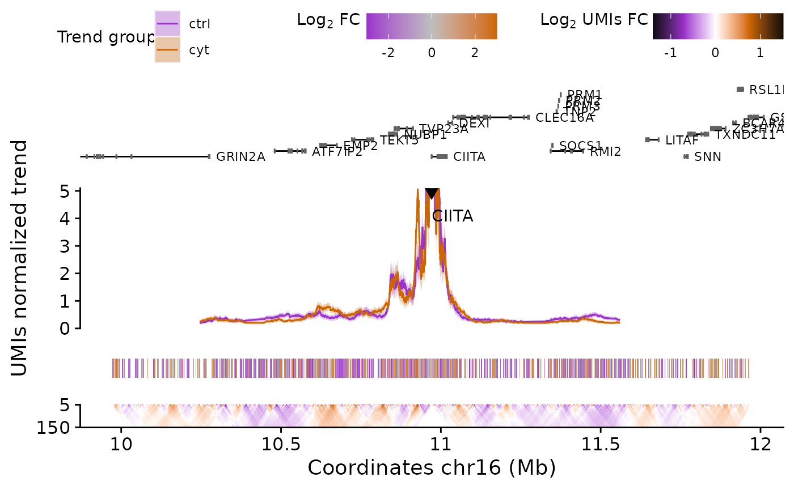

Analyzing UMI-4C data with UMI4Cats
Mireia Ramos-Rodríguez and Marc Subirana-Granés
Source:vignettes/UMI4Cats.Rmd
UMI4Cats.RmdIntroduction
Hello stranger! If you are here, that means you’ve successfully completed the UMI-4C protocol and got some sequencing results! The objective of this vignette is to guide you through a simple analysis of your brand-new UMI-4C contact data. Let’s dive in!
Overview of the package
Overview of the different functions included in the UMI4Cats package to analyze UMI-4C data.
About the experimental design
One of the strengths of the UMI-4C assay (Schwartzman et al. 2016) is that of reducing the PCR duplication bias, allowing a more accurate quantification of chromatin interactions. For this reason, UMI-4C is mostly used when trying to compare changes in chromatin interactions between two conditions, cell types or developmental stages.
Taking into account this main application, UMI4Cats has been developed to facilitate the differential analysis between conditions at a given viewpoint of interest. When analyzing your data with this package, you should take into account the following points:
Each analysis (and
UMI4Cobject) should correspond to the same viewpoint. If you are analyzing different viewpoints in the same or different loci, you need to analyze them separately.The UMI4Cats package is mostly oriented to the performance of differential analysis. If you don’t have replicates yet or want to focus your analysis on a specific set of regions (like enhancers) we recommend you to use Fisher’s Exact Test (
fisherUMI4C()). If, on the other hand, you have several replicates, you might benefit from using a DESeq2 differential test specific for UMI-4C data (differentialNbinomWaldTestUMI4C()) or you can continue to use Fisher’s exact test.When performing the differential analysis, UMI4Cats is only able to deal with a condition with 2 different levels. If you have more than two conditions, you should produce different UMI4C objects and perform pairwise comparisons.
About the example datasets
The datasets used in this vignette (obtained from Ramos-Rodríguez et al. (2019)) are available for download if you want to reproduce the contents of this vignette through the downloadUMI4CexampleData().
Briefly, the datasets correspond to human pancreatic islets exposed (cyt) or not (ctrl) to pro-inflammatory cytokines for 48 hours. In this example we are using the UMI-4C data generated from two different biological replicates (HI24 and HI32) using the promoter of the CIITA gene as viewpoint.
Sample datasets can be downloaded using the downloadUMI4CexampleData() function. When used without arguments, will download the full sample fastq files containing 200K reads. However, in order to reduce computing time, the Processing UMI-4C FASTQ files section in this vignette uses a reduced sample file containing 100 reads, which can be downloaded using downloadUMI4CexampleData(reduced = TRUE). The following sections addressing analysis and visualization of such data use the processed files from the 200K fastq files, which are also included inside the package and can be accessed using the system.file() function.
Quick start
In this section we summarize a complete analysis using the examples provided in this package:
## 0) Download example data -------------------------------
path <- downloadUMI4CexampleData()
## 1) Generate Digested genome ----------------------------
# The selected RE in this case is DpnII (|GATC), so the cut_pos is 0, and the res_enz "GATC".
hg19_dpnii <- digestGenome(
cut_pos = 0,
res_enz = "GATC",
name_RE = "DpnII",
ref_gen = BSgenome.Hsapiens.UCSC.hg19::BSgenome.Hsapiens.UCSC.hg19,
out_path = file.path(tempdir(), "digested_genome/")
)
## 2) Process UMI-4C fastq files --------------------------
raw_dir <- file.path(path, "CIITA", "fastq")
contactsUMI4C(
fastq_dir = raw_dir,
wk_dir = file.path(path, "CIITA"),
bait_seq = "GGACAAGCTCCCTGCAACTCA",
bait_pad = "GGACTTGCA",
res_enz = "GATC",
cut_pos = 0,
digested_genome = hg19_dpnii,
bowtie_index = file.path(path, "ref_genome", "ucsc.hg19.chr16"),
ref_gen = BSgenome.Hsapiens.UCSC.hg19::BSgenome.Hsapiens.UCSC.hg19,
threads = 5
)
## 3) Get filtering and alignment stats -------------------
statsUMI4C(wk_dir = file.path(path, "CIITA"))
## 4) Analyze the results ---------------------------------
# Load sample processed file paths
files <- list.files(file.path(path, "CIITA", "count"),
pattern = "*_counts.tsv.gz",
full.names = TRUE
)
# Create colData including all relevant information
colData <- data.frame(
sampleID = gsub("_counts.tsv.gz", "", basename(files)),
file = files,
stringsAsFactors = FALSE
)
library(tidyr)
colData <- colData %>%
separate(sampleID,
into = c("condition", "replicate", "viewpoint"),
remove = FALSE
)
# Make UMI-4C object including grouping by condition
umi <- makeUMI4C(
colData = colData,
viewpoint_name = "CIITA",
grouping = "condition",
bait_expansion = 2e6
)
# Plot replicates
plotUMI4C(umi, grouping=NULL)
## 5) Differential testing ----------------------
# Fisher test
umi_fisher <- fisherUMI4C(umi, filter_low = 30, grouping="condition")
plotUMI4C(umi_fisher, ylim = c(0, 10), grouping="condition")
# DESeq2 Wald Test
umi_wald <- differentialNbinomWaldTestUMI4C(umi4c=umi,
design=~condition,
alpha = 20)
plotUMI4C(umi_wald, ylim = c(0, 10), grouping="condition")Preparing necessary files
Demultiplexing FastQ files containing multiple baits
One of the many advantages of using the UMI-4C protocol is that it allows multiplexing of different baits using the same sample.
To facilitate the analysis, UMI4Cats provides a function for demultiplexing the paired-end FastQ files returned by the sequencing facility: demultiplexFastq.
This function requires the following inputs:
- Name of the R1 file as input – it will automatically detect the R2.
- Barcode sequences.
- Path and name for the output files.
The barcode sequences and names to be used for each output file need to be provided as a data.frame with column names sample and barcode.
## Input files
path <- downloadUMI4CexampleData(reduced=TRUE)
fastq <- file.path(path, "CIITA", "fastq", "ctrl_hi24_CIITA_R1.fastq.gz")
## Barcode info
barcodes <- data.frame(
sample = c("CIITA"),
barcode = c("GGACAAGCTCCCTGCAACTCA")
)
## Output path
out_path <- tempdir()
## Demultiplex baits inside FastQ file
demultiplexFastq(
fastq = fastq,
barcodes = barcodes,
out_path = out_path
)Reference genome digestion
For the processing of the UMI-4C FastQ files it is necessary to construct a digested genome using the same restriction enzyme that was used in the UMI-4C experiments.
The UMI4Cats package includes the digestGenome() function to make this process easier. The function uses a BSgenome object1 as the reference genome, which is digested in silico at a given restriction enzyme cutting sequence (res_enz). Besides the restriction sequence, it is also necessary to provide, as a zero-based numeric integer, the position at which the restriction enzyme cuts (cut_pos).
In the following table you can see three examples of the different cutting sequences for DpnII, Csp6I and HindIII.
| Restriction enzyme | Restriction seq | res_enz |
cut_pos |
|---|---|---|---|
| DpnII | :GATC
|
GATC | 0 |
| Csp6I |
G:TAC
|
GTAC | 1 |
| HindIII |
A:AGCTT
|
AAGCTT | 1 |
For this example, we are using the hg19 BSGenome object and we are going to digest it using the DpnII enzyme.
library(BSgenome.Hsapiens.UCSC.hg19)
refgen <- BSgenome.Hsapiens.UCSC.hg19
hg19_dpnii <- digestGenome(
res_enz = "GATC",
cut_pos = 0,
name_RE = "dpnII",
ref_gen = refgen,
sel_chr = "chr16", # Select bait's chr (chr16) to make example faster
out_path = file.path(tempdir(), "digested_genome/")
)
hg19_dpnii
#> [1] "/tmp/RtmpADcNkU/digested_genome//BSgenome.Hsapiens.UCSC.hg19_dpnII"The digested genome will be saved in the out_path directory as RData objects, one for each chromosome. The path of the digested genome files is outputed by the function, so you can save it as a variable (in this case hg19_dpnii) and use it for downstream analyses.
Processing UMI-4C FASTQ files
Before doing any analysis, we need to convert paired-end reads stored in the FastQ files to UMI counts in the fragments returned from the in silico digestion of the genome, which represent contact frequencies of the viewpoint with that specific fragment. This processing is implemented in the function contactsUMI4C(), which should be ran in samples generated with the same experimental design (same viewpoint and restriction enzyme).
The function will consider all FastQ files in the same folder fastq_dir to be part of the same experiment (viewpoint + restriction enzyme). However, if you want to specify a subset of samples to perform the analysis you can do so by using the file_pattern argument. This way, only the files matching the specified pattern will be used as input.
The R1 and R2 files for the each sample need to contain _R1 or _R2 and one of the following FastQ suffixes: .fastq, .fq, .fq.gz or .fastq.gz.
For each experiment, the user needs to define 3 different sequences:
-
Bait/viewpoint sequence (
bait_seq). This is the downstream primer sequence (DS primer) that matches the sequence of the queried viewpoint. -
Padding sequence (
bait_pad). The padding sequence corresponds to the nucleotides between the DS primer end and the next restriction enzyme site. -
Restriction enzyme sequence (
res_enz). This sequence is the sequence recognized by the restriction enzyme used in the experiment.

Schematic of a UMI-4C read detailing the different elements that need to be used as input for processing the data.
Additionally, it is necessary to define the restriction enzyme cutting position (cut_pos) as previously done for the digested genome generation, together with the path of such digested genome (digested_genome) returned by the digestGenome() function.
contactsUMI4C() performs the alignment using Bowtie2 and thus, you need to provide the reference genome indexes generated with bowtie22. Remember to make sure that both your Bowtie2 index and your reference and digested genomes correspond to the same build (in this example, hg19).
## Use reduced example to make vignette faster
## If you want to download the full dataset, set reduced = FALSE or remove
## the reduce argument.
## The reduced example is already downloaded in the demultiplexFastq chunk.
# path <- downloadUMI4CexampleData(reduced=TRUE)
raw_dir <- file.path(path, "CIITA", "fastq")
index_path <- file.path(path, "ref_genome", "ucsc.hg19.chr16")
## Run main function to process UMI-4C contacts
contactsUMI4C(
fastq_dir = raw_dir,
wk_dir = file.path(path, "CIITA"),
file_pattern = "ctrl_hi24_CIITA", # Select only one sample to reduce running time
bait_seq = "GGACAAGCTCCCTGCAACTCA",
bait_pad = "GGACTTGCA",
res_enz = "GATC",
cut_pos = 0,
digested_genome = hg19_dpnii,
bowtie_index = index_path,
ref_gen = BSgenome.Hsapiens.UCSC.hg19::BSgenome.Hsapiens.UCSC.hg19,
sel_seqname = "chr16", # Input bait chr to reduce running time
threads = 2
)
#>
#> [2021-01-29 11:18:56] Starting prepUMI4C using:
#> > Fastq directory:
#> /tmp/RtmpADcNkU/UMI4Cats_data_reduced/CIITA/fastq
#> > Work directory: /tmp/RtmpADcNkU/UMI4Cats_data_reduced/CIITA
#> > Bait sequence: GGACAAGCTCCCTGCAACTCA
#> > Bait pad: GGACTTGCA
#> > Restriction enzyme: GATC
#> > Number of reads loaded into memory: 1e+11
#> [2021-01-29 11:18:57] Finished sample ctrl_hi24_CIITA
#>
#> [2021-01-29 11:18:57] Starting splitUMI4C using:
#> > Work directory: /tmp/RtmpADcNkU/UMI4Cats_data_reduced/CIITA
#> > Cut position: 0
#> > Restriction enzyme: GATC
#> > Number of reads loaded into memory: 1e+11
#> [2021-01-29 11:18:57] Finished sample ctrl_hi24_CIITA_R1.fq.gz
#> [2021-01-29 11:18:58] Finished sample ctrl_hi24_CIITA_R2.fq.gz
#>
#> [2021-01-29 11:18:58] Starting alignmentUMI4C using:
#> > Work directory: /tmp/RtmpADcNkU/UMI4Cats_data_reduced/CIITA
#> > Viewpoint position: chr16:10972515-10972548
#> > Reference genome: /tmp/RtmpADcNkU/UMI4Cats_data_reduced/ref_genome/ucsc.hg19.chr16
#> > Number of threads: 2
#> [2021-01-29 11:18:58] Finished sample ctrl_hi24_CIITA_R1.fq
#> [2021-01-29 11:18:58] Finished sample ctrl_hi24_CIITA_R2.fq
#>
#> [2021-01-29 11:18:58] Starting counterUMI4C using:
#> > Work directory: /tmp/RtmpADcNkU/UMI4Cats_data_reduced/CIITA
#> > Viewpoint position: chr16:10972515-10972548
#> > Restriction enzyme: GATC
#> > Digested genome: /tmp/RtmpADcNkU/digested_genome//BSgenome.Hsapiens.UCSC.hg19_dpnII
#> [2021-01-29 11:18:59] Finished sample ctrl_hi24_CIITAInternally, contactsUMI4C() runs the following processes sequentially:
FastQ files preparation (
prepUMI4C). In this processing step, only reads containing thebait_seq+bait_pad+res_enzare selected. Reads with mean Phread quality scores < 20 are filtered out.Split reads at restriction sites (
splitUMI4C). Using theres_enzsequence and the cutting position (cut_pos), all R1 and R2 reads are split to mimic the fragments generated experimentally.Align split reads to the reference genome (
alignmentUMI4C).Collapse reads using UMIs (
counterUMI4C). This step is done to count real molecular events and reduce artifacts due to PCR duplicates. The function returns contacts with restriction fragments < 5Mb from the viewpoint.
Note on memory usage: For the preparation and splitting, the FastQ files are loaded into memory. If you are having problems with the memory size available in your computer, you can change the number of lines that are to be loaded using the numb_reads parameter. See ?contactsUMI4C for more information.
The final output of this process is a compressed tsv file stored in wk_dir/count, which contains the coordinates for each contact (viewpoint + contact) and the number of UMIs that support that specific interaction. These files will be used as input for the analyses performed in the following section.
Quality control measures
Once the processing step has been ran, the statistics of the UMI-4C filtering, alignment and final number of UMIs can be generated from the logs returned by the contactsUMI4C() function. By using these logs, the function statsUMI4C() will produce a summary plot and a summary table with all statistics (wk_dir/logs/stats_summary.txt).
For demonstration purposes we used a reduced version of the fastq files to reduce comptutation time. Thus, now we will load the output of contactsUMI4C() with the full dataset, which has ben pre-computed and is saved within the UMI4Cats package.
# Using the full dataset included in the package
statsUMI4C(wk_dir = system.file("extdata", "CIITA",
package = "UMI4Cats"
))
# Read stats table
stats <- read.delim(system.file("extdata", "CIITA", "logs", "stats_summary.txt",
package = "UMI4Cats"
))
knitr::kable(stats)| sample_id | specific_reads | nonspecific_reads | filtered_reads | filtout_reads | al_mapped | al_unmapped | umi |
|---|---|---|---|---|---|---|---|
| ctrl_hi24_CIITA | 183831 | 16169 | 173342 | 10489 | 473730 | 75809 | 1115 |
| ctrl_hi32_CIITA | 183759 | 16241 | 181789 | 1970 | 479286 | 98065 | 2340 |
| cyt_hi24_CIITA | 181278 | 18722 | 178473 | 2805 | 479134 | 90485 | 1333 |
| cyt_hi32_CIITA | 183770 | 16230 | 182106 | 1664 | 466677 | 111822 | 2198 |
The quality control measures summarized in the plot and the table are:
-
Specific reads. Corresponds to the number of reads that contain the full viewpoint sequence (
bait_seq+bait_pad+res_enz). -
Filtered reads. Number of reads with mean Phred quality scores
>= 20. - Mapping stats. Indicates how many split reads are mapped or unmapped to the reference genome.
- UMIs. Shows the final number of molecular contacts detected.
Loading UMI-4C data into R
After processing the FastQ reads and obtaining tables summarizing number of UMIs supporting each fragment interaction with the viewpoint, the next step is to analyze such data by detecting differential contacts and visualizing the genomic interactions.
Build the UMI4C object
The first step of the UMI-4C data analysis consists on loading the tables generated by the function contactsUMI4C() and use them to construct a UMI4C object, which is based on the SummarizedExperiment class. All these steps are performed automatically by the makeUMI4C() function.
The makeUMI4C will need as input a data frame (colData) containing all relevant experiment information that will be needed for analyzing the data later on. The mandatory columns are:
-
sampleID: Unique identifier for the sample. -
replicate: Replicate character or number identifier. -
condition: Grouping variable for performing the differential analysis. For example: “control” and “treatment,” two different cell types, etc. The condition column should only have two different values. If more condition variables are provided, the differential analysis will fail. -
file: Complete path and filename of the tsv files generated bycontactsUMI4C().
You can also include other additional columns to colData.
The UMI4C object will contain data from all the replicates. However, you might be interested in also including information of samples grouped using a specific variable, such as condition, to plot combined profiles or perform differential tests on merged replicates. The argument grouping controls this behavior. By default, the grouping argument is set to grouping = "condition", which will group the samples according to the variables in the condition column. This grouped UMI4C can be accessed using groupsUMI4C(umi4c)$condition. You can also add additional groupings to a specific UMI-4C object using the addGrouping() function or avoid the calculation of grouped sample setting grouping = NULL.
Additionally, the makeUMI4C function also contains other arguments that can be used if you want to tweak the default parameters of the analysis. See ?makeUMI4C to have a complete list and description of all the arguments.
# Load sample processed file paths
files <- list.files(system.file("extdata", "CIITA", "count", package="UMI4Cats"),
pattern = "*_counts.tsv.gz",
full.names = TRUE
)
# Create colData including all relevant information
colData <- data.frame(
sampleID = gsub("_counts.tsv.gz", "", basename(files)),
file = files,
stringsAsFactors = FALSE
)
library(tidyr)
colData <- colData %>%
separate(sampleID,
into = c("condition", "replicate", "viewpoint"),
remove = FALSE
)
# Load UMI-4C data and generate UMI4C object
umi <- makeUMI4C(
colData = colData,
viewpoint_name = "CIITA",
grouping = "condition",
ref_umi4c = c("condition"="ctrl"),
bait_expansion = 2e6
)
umi
#> class: UMI4C
#> dim: 5853 4
#> metadata(7): bait scales ... ref_umi4c region
#> assays(6): umi norm_mat ... scale sd
#> rownames(5853): frag_1 frag_2 ... frag_5859 frag_5860
#> rowData names(2): id_contact position
#> colnames(4): ctrl_hi24_CIITA ctrl_hi32_CIITA cyt_hi24_CIITA
#> cyt_hi32_CIITA
#> colData names(5): sampleID condition replicate viewpoint file
groupsUMI4C(umi)
#> List of length 1
#> names(1): conditionThe makeUMI4C function will perform the following steps to generate the UMI4C object:
-
Remove fragment ends around the bait, as they are generally biased because of their proximity to the viewpoint. The value of the region that will be excluded from the analysis can be specified using the
bait_exclusionargument. The default is 3 kb. -
Focus the scope of the analysis in a specific genomic region around the bait, by default this is a 2Mb window centerd on the viewpoint. The default value can be changed using the
bait_expansionargument. - Sum the UMIs of the different samples belonging to the same group (defined by the
groupingvariable). -
Obtain the normalization matrices that will be used to scale the groups to the reference, by default the group with less UMIs. If you want to avoid this normalization step, you can set
normalizedtoFALSE. - Calculate the domainograms for each group.
- Calculate the adaptive trend for each group.
Accessing UMI4C object information
The usual accessor functions from the SummarizedExperiment-class3 also work with the UMI-4C class (for example: assay, colData, etc.). Other additional accessors have been created to retrieve different information:
-
dgram(). Get a list of the domaingorams for each group. -
bait(). Retrieve a GRanges object with the bait position. -
trend(). Obtain a data.frame in long format with the adaptive smoothing trend. -
resultsUMI4C(). Retrieve results from the differential analysis. This only works if a differential analysis has been performed on the UMI4C object.
You can use this functions in the per-sample UMI4C object or in the grouped UMI4C object, which can be accessed using groupsUMI4C(umi4c)$<groupind-variable>. See an example below.
groupsUMI4C(umi) # Available grouped UMI-4C objects
#> List of length 1
#> names(1): condition
head(assay(umi)) # Retrieve raw UMIs
#> ctrl_hi24_CIITA ctrl_hi32_CIITA cyt_hi24_CIITA cyt_hi32_CIITA
#> frag_1 0 0 0 0
#> frag_2 0 0 0 0
#> frag_3 0 2 0 0
#> frag_4 0 0 0 0
#> frag_5 0 0 0 0
#> frag_6 0 0 0 0
head(assay(groupsUMI4C(umi)$condition)) # Retrieve UMIs grouped by condition
#> ctrl cyt
#> frag_1 0 0
#> frag_2 0 0
#> frag_3 2 0
#> frag_4 0 0
#> frag_5 0 0
#> frag_6 0 0
colData(umi) # Retrieve column information
#> DataFrame with 4 rows and 5 columns
#> sampleID condition replicate viewpoint
#> <character> <character> <character> <character>
#> ctrl_hi24_CIITA ctrl_hi24_CIITA ctrl hi24 CIITA
#> ctrl_hi32_CIITA ctrl_hi32_CIITA ctrl hi32 CIITA
#> cyt_hi24_CIITA cyt_hi24_CIITA cyt hi24 CIITA
#> cyt_hi32_CIITA cyt_hi32_CIITA cyt hi32 CIITA
#> file
#> <character>
#> ctrl_hi24_CIITA /usr/local/lib/R/hos..
#> ctrl_hi32_CIITA /usr/local/lib/R/hos..
#> cyt_hi24_CIITA /usr/local/lib/R/hos..
#> cyt_hi32_CIITA /usr/local/lib/R/hos..
rowRanges(umi) # Retrieve fragment coordinates
#> GRanges object with 5853 ranges and 2 metadata columns:
#> seqnames ranges strand | id_contact position
#> <Rle> <IRanges> <Rle> | <character> <character>
#> frag_1 chr16 9972440-9972810 * | frag_1 upstream
#> frag_2 chr16 9972811-9973022 * | frag_2 upstream
#> frag_3 chr16 9973023-9973900 * | frag_3 upstream
#> frag_4 chr16 9973901-9974010 * | frag_4 upstream
#> frag_5 chr16 9974011-9974144 * | frag_5 upstream
#> ... ... ... ... . ... ...
#> frag_5856 chr16 11970551-11971015 * | frag_5856 downstream
#> frag_5857 chr16 11971016-11971304 * | frag_5857 downstream
#> frag_5858 chr16 11971305-11971499 * | frag_5858 downstream
#> frag_5859 chr16 11971500-11971588 * | frag_5859 downstream
#> frag_5860 chr16 11971589-11972035 * | frag_5860 downstream
#> -------
#> seqinfo: 1 sequence from an unspecified genome; no seqlengths
dgram(umi) # Retrieve domainograms
#> List of length 4
#> names(4): ctrl_hi24_CIITA ctrl_hi32_CIITA cyt_hi24_CIITA cyt_hi32_CIITA
dgram(groupsUMI4C(umi)$condition) # Retrieve domainograms
#> List of length 2
#> names(2): ctrl cyt
bait(umi) # Retrieve bait coordinates
#> GRanges object with 1 range and 1 metadata column:
#> seqnames ranges strand | name
#> <Rle> <IRanges> <Rle> | <character>
#> [1] chr16 10970996-10972544 * | CIITA
#> -------
#> seqinfo: 1 sequence from an unspecified genome; no seqlengths
head(trend(umi)) # Retrieve adaptive smoothing trend
#> geo_coord trend sd scale id_contact sample sampleID
#> 1 10254166 0.08333333 0.03333333 150 frag_754 ctrl_hi24_CIITA <NA>
#> 2 10254519 0.08389262 0.03355705 149 frag_755 ctrl_hi24_CIITA <NA>
#> 3 10254871 0.08445946 0.03378378 148 frag_756 ctrl_hi24_CIITA <NA>
#> 4 10255223 0.08503401 0.03401361 147 frag_757 ctrl_hi24_CIITA <NA>
#> 5 10255577 0.08561644 0.03424658 146 frag_758 ctrl_hi24_CIITA <NA>
#> 6 10255933 0.08620690 0.03448276 145 frag_759 ctrl_hi24_CIITA <NA>
#> replicate viewpoint file
#> 1 <NA> <NA> <NA>
#> 2 <NA> <NA> <NA>
#> 3 <NA> <NA> <NA>
#> 4 <NA> <NA> <NA>
#> 5 <NA> <NA> <NA>
#> 6 <NA> <NA> <NA>Differential analysis
Differential analysis using Fisher’s Exact Test
Once the UMI4C object is generated, you can perform a differential analysis using the fisherUMI4C() function.
First of all, queried regions will be filtered according to the median number of UMIs present in the filter_low parameter. You can reduce this number or disable filtering using filter_low = FALSE.
Then, a contingency table for each region where the differential test should be performed will be created, where the group stored in metadata(umi)$ref_umi4c will be used as references. The values on the contingency table correspond to the following:
| Group | Query region | Region |
|---|---|---|
| Reference | \(n1\) | \(N1 - n1\) |
| Condition | \(n2\) | \(N2 - n2\) |
Where \(N1\) and \(N2\) correspond to the total number of UMIs in the whole analyzed region (metadata(umi)$region) and \(n1\) and \(n2\) correspond to the total number of UMIs in the query region that is to be tested.
After all the Fisher’s Exact Tests are performed, p-values are adjusted using the FDR method. Query regions with adjusted p-values > 0.05 will be considered significantly different. Check ?fisherUMI4() for more information and additional arguments you can provide to the function.
Differential analysis in a specific set of regions
Many times, UMI-4C is used to test whether a certain set of promoter-enhancer contacts differ between conditions or cell types. For this cases, the fisherUMI4c() with the argument query_regions set to those regions of interest can be used. Your query regions should be provided as a GRanges object. If your set of query regions is narrow (~1kb), you can resize them to the desired width using the resize argument.
library(GenomicRanges)
# Provide your own query regions as GRanges objects
enhancers <- GRanges(c(
"chr16:10925006-10928900",
"chr16:11102721-11103700"
))
# Perform differential test
umi_dif1 <- fisherUMI4C(umi,
grouping = "condition",
query_regions = enhancers,
filter_low = 20,
resize = 5e3
)Differential analysis in the binned region
In case you do not have a candidate set of enhancer regions, the fisherUMI4C() function will bin the experiment region in bin of window_size size (default is 5kb). This will then be the query regions where the differential test will be performed, after filtering for number of UMIs with the filter_low argument.
# Perform differential test
umi_dif2 <- fisherUMI4C(umi,
grouping = "condition",
filter_low = 20,
window_size = 5e3
)Differential Analysis using DESeq2
It is also possible to perform a differential analysis based on DESeq2’s Wald test. For using this differential test it is necessary to have replicates for the grouping variable included in the design, as they are needed to calculate dispersions.
umi_dif3 <- differentialNbinomWaldTestUMI4C(umi,
design = ~condition,
alpha=100) # Low alpha to make computation faster
#>
#> [2021-01-29 11:19:05] Starting vstUMI4C
#> > Samples of DDS object:
#> ctrl_hi24_CIITA, ctrl_hi32_CIITA, cyt_hi24_CIITA, cyt_hi32_CIITA
#> gene-wise dispersion estimates
#> mean-dispersion relationship
#> final dispersion estimates
#> [2021-01-29 11:19:07] Finished vstUMI4C
#>
#> [2021-01-29 11:19:07] Starting smoothMonotoneUMI4C using:
#> > Samples of DDS object:
#> ctrl_hi24_CIITA, ctrl_hi32_CIITA, cyt_hi24_CIITA, cyt_hi32_CIITA
#> > Alpha:
#> 100
#> > Penalty:
#> 0.1
#>
#> Results
#>
#> Iter. PENSSE Grad Length Intercept Slope
#> 0 0.1605 0.002 1.3693 -0.1402
#> 1 0.1554 0.003 2.4147 -0.2588
#> 2 0.155 2e-04 2.4607 -0.2651
#>
#> Results
#>
#> Iter. PENSSE Grad Length Intercept Slope
#> 0 0.3019 0.0068 2.2821 -0.2848
#> 1 0.2944 0.006 2.9711 -0.3932
#> 2 0.2915 0.0028 3.3079 -0.4437
#> 3 0.2907 0.0016 3.5 -0.4759
#> 4 0.2905 8e-04 3.6235 -0.4962
#>
#> Results
#>
#> Iter. PENSSE Grad Length Intercept Slope
#> 0 0.1911 0.0027 1.529 -0.1656
#> 1 0.1853 0.0039 2.5313 -0.2908
#> 2 0.1844 4e-04 2.6208 -0.3035
#>
#> Results
#>
#> Iter. PENSSE Grad Length Intercept Slope
#> 0 0.2977 0.0051 2.1222 -0.2579
#> 1 0.2935 0.0043 2.5996 -0.3353
#> 2 0.2919 0.0019 2.8275 -0.3712
#> 3 0.2914 0.0012 2.9752 -0.3965
#> 4 0.2913 6e-04 3.0622 -0.4112
#> [2021-01-29 11:19:20] Finished smoothMonotoneUMI4C
#>
#> [2021-01-29 11:19:20] Starting nbinomWaldTestUMI4C using:
#> > Samples of DDS object:
#> ctrl_hi24_CIITA, ctrl_hi32_CIITA, cyt_hi24_CIITA, cyt_hi32_CIITA
#> found already estimated dispersions, replacing these
#> gene-wise dispersion estimates
#> mean-dispersion relationship
#> -- note: fitType='parametric', but the dispersion trend was not well captured by the
#> function: y = a/x + b, and a local regression fit was automatically substituted.
#> specify fitType='local' or 'mean' to avoid this message next time.
#> final dispersion estimates
#> [2021-01-29 11:19:22] Finished sample nbinomWaldTestUMI4CThis differential analysis works as follow:
- Variance stabilizing transformation (VST) of the raw UMI counts.
- Smooth monotone fitting of the VST counts.
- Differential interactions between groups.
DESeq2 Differential Analysis flowchart.
Variance stabilizing transformation (VST) of the raw counts
In 4C experiments, the standard deviations across samples are large for high abundance fragments. Such heteroscedasticity may skew the differential analysis towards fragments either far or close to the viewpoint. Variance stabilizing transformation (VST) is used to remove the dependence of the variance on the mean, thus correcting the dependence of the standard deviations to the fragment abundance.
VST is calculated performing the following steps:
- Count data normalization using a median of ratios method.
- Estimation of dispersions.
- Fitting a curve to the dispersion estimates for calculating the VST.
- Transform the count data using the VST.
Smooth monotone fitting
The 4C signal decays with genomic distance from the viewpoint and converges towards a constant level of background. 4C data reflects a smooth strictly increasing or strictly decreasing function, so it is desirable to smooth the data with a strictly monotone function. Thus, the general decay of the 4C signal with genomic distance from the viewpoint is fitted using a symmetric monotone fit.
The monotone smoothing function is calculated using the transformed raw counts, using the fda package. Then, the fitted count values are generated using such function.
Differential interactions between groups
The fitted values are VST-back-transformed to calculate the normalization factors, which will represent the fitted distance dependence on the scale of the raw counts. This will allow to take into account the signal’s distance dependence between samples for detecting differential interactions.
Differential interactions are then tested using DESeq2’s Negative Binomial GLM test, taking advantage of the previously calculated normalization factors and dispersion estimates.
Retrieve differential analysis results
Results from both Fisher’s Exact test and DESeq2 can be retrieved using the resultsUMI4C() on the UMI4C object returned by both functions.
resultsUMI4C(umi_dif1, ordered = TRUE, counts = TRUE, format = "data.frame")
#> seqnames start end id umis_ref umis_cond pvalue
#> 1 chr16 10924453 10929452 region_1 29 74 1.461849e-05
#> 2 chr16 11100711 11105710 region_2 15 11 NA
#> odds_ratio log2_odds_ratio padj sign
#> 1 2.525929 1.336814 1.461849e-05 TRUE
#> 2 NA NA NA NAThe parameter counts indicates whether raw counts used for the test should be outputted. In Fisher’s Exact Test, umis_ref corresponds to the number of raw UMIs from the sample/group used as reference (accessible through metadata(umi_dif)$ref_umi4c).
Visualizing UMI-4C contact data
Once the UMI4C object is created, you can visualize detected chromatin interactions using the plotUMI4C function.
The gene annotations will be extracted from the TxDb.Hsapiens.UCSC.hg19.knownGene package by default. Make sure that the annotations coincide with your reference genome. You can check the package GenomicFeatures for more information on available TxDb objects. The domainogram plotting is controlled by the dgram_plot argument. If you set it to FALSE, the domainogram will not be plotted.
In case you are interested in plotting the profiles of the different samples contained in your experiment, you just need to set the grouping argument to NULL, which will disable sample grouping:
plotUMI4C(umi,
grouping = NULL,
TxDb = TxDb.Hsapiens.UCSC.hg19.knownGene::TxDb.Hsapiens.UCSC.hg19.knownGene,
dgram_plot = FALSE
)If the UMI4C object contains information on the differential contacts, this data will be shown in the plot as well. The grouping argument uses the grouped trends and domainograms stored in groupsuMI4C(). If you want to add a new grouping, you can use the addGRouping() function.
plotUMI4C(umi_dif1, grouping = "condition")
plotUMI4C(umi_dif3, grouping = "condition")
There are several different arguments you can provide to plotUMI4C to modify the output plot. You can check them by typing ?plotUMI4C in your R console.
The plotUMI4C function is a wrapper for separate functions that plot the different elements included in the figure. You can use each of the functions separately if you are interesting in combining them differently or with other ggplot2 objects. Check each function documentation at ?plotTrend, ?plotGenes, ?plotDomainogram and ?plotDifferential.